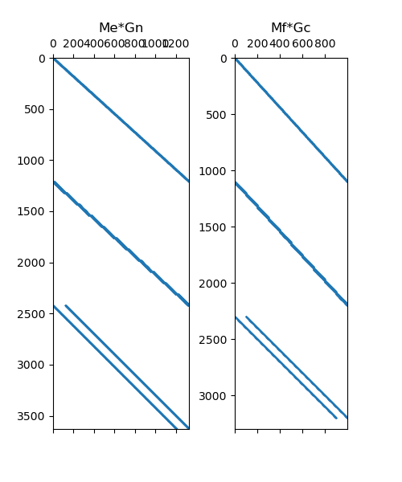
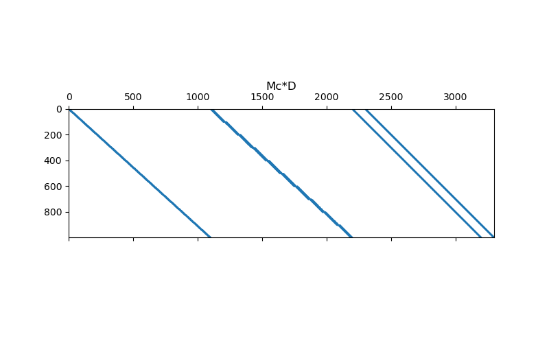
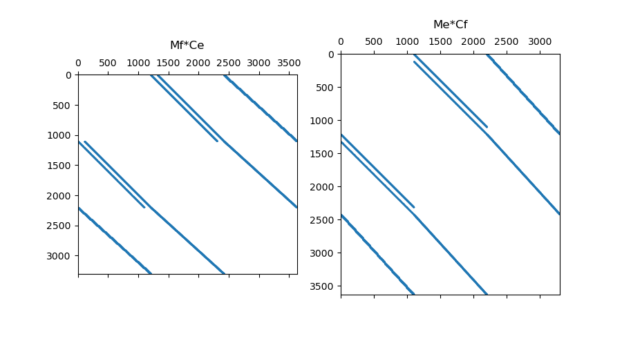
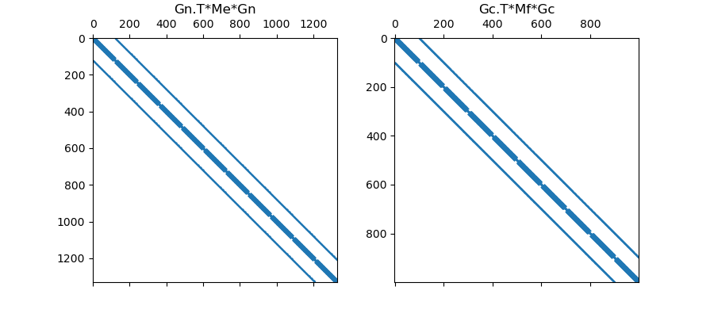

Note
Go to the end to download the full example code.
Differential Operators#
When solving PDEs using the finite volume approach, inner products may contain differential operators. Where \(\psi\) and \(\phi\) are scalar quantities, and \(\vec{u}\) and \(\vec{v}\) are vector quantities, we may need to derive a discrete approximation for the following inner products:
\((\vec{u} , \nabla \phi)\)
\((\psi , \nabla \cdot \vec{v})\)
\((\vec{u} , \nabla \times \vec{v})\)
\((\psi, \Delta^2 \phi)\)
In this section, we demonstrate how to go from the inner product to the discrete approximation for each case. In doing so, we must construct discrete differential operators, inner product matricies and consider boundary conditions.
Import Packages#
Here we import the packages required for this tutorial
from discretize.utils import sdiag
from discretize import TensorMesh
import numpy as np
import matplotlib.pyplot as plt
Gradient#
Where \(\phi\) is a scalar quantity and \(\vec{u}\) is a vector quantity, we would like to evaluate the following inner product:
Inner Product at edges:
In the case that \(\vec{u}\) represents a field, it is natural for it to be discretized to live on cell edges. By defining \(\phi\) to live at the nodes, we can use the nodal gradient operator (\(\mathbf{G_n}\)) to map from nodes to edges. The inner product is therefore computed using an inner product matrix (\(\mathbf{M_e}\)) for quantities living on cell edges, e.g.:
Inner Product at faces:
In the case that \(\vec{u}\) represents a flux, it is natural for it to be discretized to live on cell faces. By defining \(\phi\) to live at cell centers, we can use the cell gradient operator (\(\mathbf{G_c}\)) to map from centers to faces. In this case, we must impose boundary conditions on the discrete gradient operator because it cannot use locations outside the mesh to evaluate the gradient on the boundary. If done correctly, the inner product is computed using an inner product matrix (\(\mathbf{M_f}\)) for quantities living on cell faces, e.g.:
# Make basic mesh
h = np.ones(10)
mesh = TensorMesh([h, h, h])
# Items required to perform u.T*(Me*Gn*phi)
Me = mesh.get_edge_inner_product() # Basic inner product matrix (edges)
Gn = mesh.nodal_gradient # Nodes to edges gradient
# Items required to perform u.T*(Mf*Gc*phi)
Mf = mesh.get_face_inner_product() # Basic inner product matrix (faces)
mesh.set_cell_gradient_BC(
["neumann", "dirichlet", "neumann"]
) # Set boundary conditions
Gc = mesh.cell_gradient # Cells to faces gradient
# Plot Sparse Representation
fig = plt.figure(figsize=(5, 6))
ax1 = fig.add_subplot(121)
ax1.spy(Me * Gn, markersize=0.5)
ax1.set_title("Me*Gn")
ax2 = fig.add_subplot(122)
ax2.spy(Mf * Gc, markersize=0.5)
ax2.set_title("Mf*Gc")

Text(0.5, 1.0513468013468013, 'Mf*Gc')
Divergence#
Where \(\psi\) is a scalar quantity and \(\vec{v}\) is a vector quantity, we would like to evaluate the following inner product:
The divergence defines a measure of the flux leaving/entering a volume. As a result, it is natural for \(\vec{v}\) to be a flux defined on cell faces. The face divergence operator (\(\mathbf{D}\)) maps from cell faces to cell centers, therefore # we should define \(\psi\) at cell centers. The inner product is ultimately computed using an inner product matrix (\(\mathbf{M_f}\)) for quantities living on cell faces, e.g.:
# Make basic mesh
h = np.ones(10)
mesh = TensorMesh([h, h, h])
# Items required to perform psi.T*(Mc*D*v)
Mc = sdiag(mesh.cell_volumes) # Basic inner product matrix (centers)
D = mesh.face_divergence # Faces to centers divergence
# Plot sparse representation
fig = plt.figure(figsize=(8, 5))
ax1 = fig.add_subplot(111)
ax1.spy(Mc * D, markersize=0.5)
ax1.set_title("Mc*D", pad=20)

Text(0.5, 1.0, 'Mc*D')
Curl#
Where \(\vec{u}\) and \(\vec{v}\) are vector quantities, we would like to evaluate the following inner product:
Inner Product at Faces:
Let \(\vec{u}\) denote a flux and let \(\vec{v}\) denote a field. In this case, it is natural for the flux \(\vec{u}\) to live on cell faces and for the field \(\vec{v}\) to live on cell edges. The discrete curl operator (\(\mathbf{C_e}\)) in this case naturally maps from cell edges to cell faces without the need to define boundary conditions. The inner product can be approxiated using an inner product matrix (\(\mathbf{M_f}\)) for quantities living on cell faces, e.g.:
Inner Product at Edges:
Now let \(\vec{u}\) denote a field and let \(\vec{v}\) denote a flux. Now it is natural for the \(\vec{u}\) to live on cell edges and for \(\vec{v}\) to live on cell faces. We would like to compute the inner product using an inner product matrix (\(\mathbf{M_e}\)) for quantities living on cell edges. However, this requires a discrete curl operator (\(\mathbf{C_f}\)) that maps from cell faces to cell edges; which requires to impose boundary conditions on the operator. If done successfully:
# Make basic mesh
h = np.ones(10)
mesh = TensorMesh([h, h, h])
# Items required to perform u.T*(Mf*Ce*v)
Mf = mesh.get_face_inner_product() # Basic inner product matrix (faces)
Ce = mesh.edge_curl # Edges to faces curl
# Items required to perform u.T*(Me*Cf*v)
Me = mesh.get_edge_inner_product() # Basic inner product matrix (edges)
Cf = mesh.edge_curl.T # Faces to edges curl (assumes Dirichlet)
# Plot Sparse Representation
fig = plt.figure(figsize=(9, 5))
ax1 = fig.add_subplot(121)
ax1.spy(Mf * Ce, markersize=0.5)
ax1.set_title("Mf*Ce", pad=10)
ax2 = fig.add_subplot(122)
ax2.spy(Me * Cf, markersize=0.5)
ax2.set_title("Me*Cf", pad=10)

Text(0.5, 1.068020708880924, 'Me*Cf')
Scalar Laplacian#
Where \(\psi\) and \(\phi\) are scalar quantities, and the scalar Laplacian \(\Delta^2 = \nabla \cdot \nabla\), we would like to approximate the following inner product:
Using \(p \nabla \cdot \mathbf{q} = \nabla \cdot (p \mathbf{q}) - \mathbf{q} \cdot (\nabla p )\) and the Divergence theorem we obtain:
In this case, the surface integral can be eliminated if we can assume a Neumann condition of \(\partial \phi/\partial n = 0\) on the boundary.
Inner Prodcut at Edges:
Let \(\psi\) and \(\phi\) be discretized to the nodes. In this case, the discrete gradient operator (\(\mathbf{G_n}\)) must map from nodes to edges. Ultimately we evaluate the inner product using an inner product matrix (\(\mathbf{M_e}\) for quantities living on cell edges, e.g.:
Inner Product at Faces:
Let \(\psi\) and \(\phi\) be discretized to cell centers. In this case, the discrete gradient operator (\(\mathbf{G_c}\)) must map from centers to faces; and requires the user to set Neumann conditions in the operator. Ultimately we evaluate the inner product using an inner product matrix (\(\mathbf{M_f}\)) for quantities living on cell faces, e.g.:
# Make basic mesh
h = np.ones(10)
mesh = TensorMesh([h, h, h])
# Items required to perform psi.T*(Gn.T*Me*Gn*phi)
Me = mesh.get_edge_inner_product() # Basic inner product matrix (edges)
Gn = mesh.nodal_gradient # Nodes to edges gradient
# Items required to perform psi.T*(Gc.T*Mf*Gc*phi)
Mf = mesh.get_face_inner_product() # Basic inner product matrix (faces)
mesh.set_cell_gradient_BC(["dirichlet", "dirichlet", "dirichlet"])
Gc = mesh.cell_gradient # Centers to faces gradient
# Plot Sparse Representation
fig = plt.figure(figsize=(9, 4))
ax1 = fig.add_subplot(121)
ax1.spy(Gn.T * Me * Gn, markersize=0.5)
ax1.set_title("Gn.T*Me*Gn", pad=5)
ax2 = fig.add_subplot(122)
ax2.spy(Gc.T * Mf * Gc, markersize=0.5)
ax2.set_title("Gc.T*Mf*Gc", pad=5)

Text(0.5, 1.0770202020202022, 'Gc.T*Mf*Gc')
Total running time of the script: (0 minutes 0.336 seconds)